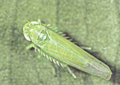

PESTS OF CASTOR :: Minor Pests :: Leaf Hopper
10. Leaf hopper: Empoasca flavescens (Cicadellidae: Hemiptera)
Damage symptoms: Nymphs and adults suck the sap from the under surface of the leaves and cause “hopper burn”. Leaves become crinkled and cup shaped.
 |
Bionomics: Adult is green, wedge shaped hopper. It lays eggs within the leaf veins. A female lays 15-37 eggs during an oviposition period of 5-7 days. The egg period is 7-8 days. The nymphal period is 9 days.